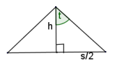
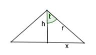
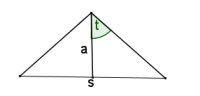

If we can calculate the area of one of the triangles we can multiply by n to find the total area of the polygon.
If we can calculate the area of one of the triangles we can multiply by n to find the total area of the polygon.
This page describes how to derive the formula for the area of a regular polygon by breaking it down into a set of n isosceles triangles, where n is the number of sides.
As shown below, a regular polygon can be broken down into a set of congruent isosceles triangles. In this case the hexagon has six of them.
If we can calculate the area of one of the triangles we can multiply by n to find the total area of the polygon.
If we look at one of the triangles and draw a line from the apex to the midpoint of the base it will form a right angle. Let the length of this line be h. The base of the triangle is s, the side length of the polygon.

The whole angle at the apex is dependent on the number of sides n: So the angle t is half that, which simplifies to We know that the tan of an angle is opposite side over adjacent side, so Rearranging to solve for h: The area of any triangle is half the base times height, so Which simplifies to Finally since have n triangles, multiply by n:The radius of a regular polygon is the distance from the center to any vertex. In the figure below the leg of the isosceles triangle is a radius r of the polygon. We add a perpendicular h from the apex to the base. In this case, let t be the whole angle at the apex.

From the figure we see that The area of any triangle is half the base times height, and since x is already half the base: Substituting x,h: Using the double angle 1 trig identity we get The whole angle 2t at the apex is dependent on the number of sides: n Substituting this for 2t: Finally, there are n triangles in the polygon soThe apothem of a regular polygon is a line from the center to the midpoint of a side, which it meets at right angles. In the figure below, the apothem is labelled a.

The whole angle at the apex is dependent on the number of sides n: So the angle t is half that, which simplifies to We know that the tan of an angle is opposite side over adjacent side, so Transposing we solve this for s The area of any triangle is half the base times height, so Which simplifies to Finally since have n triangles, multiply by n: